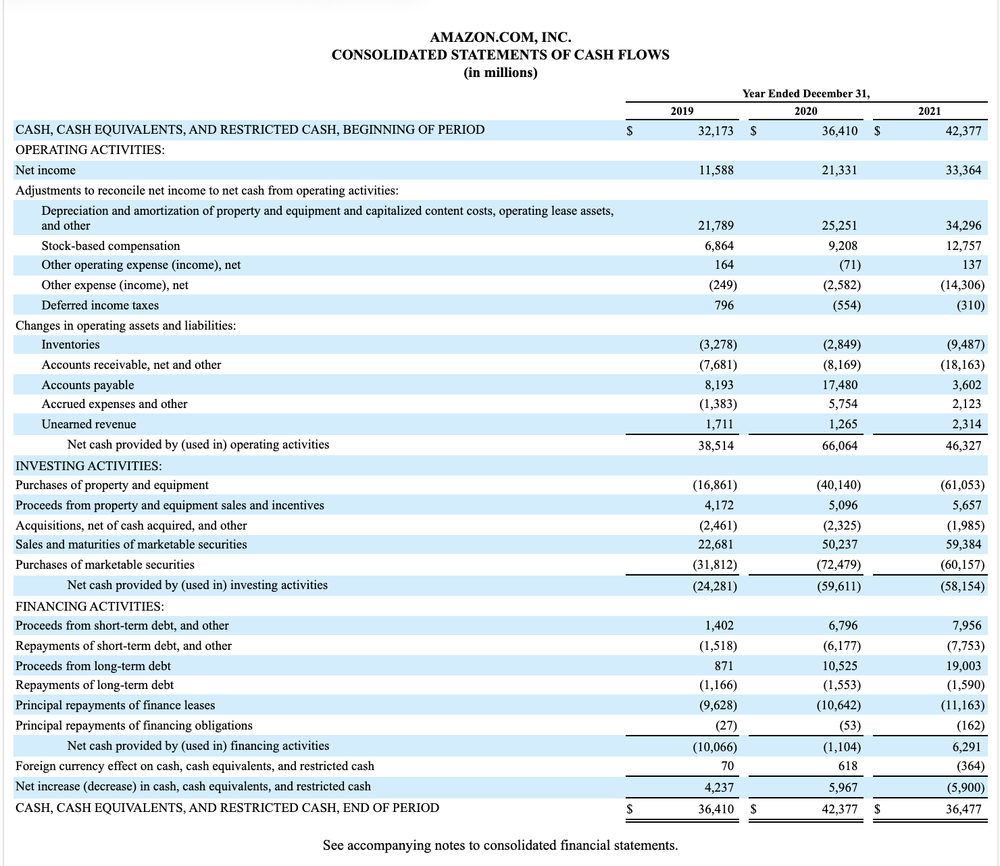

It is all about cash flows
Can we not talk about.. (no, not quarto..) cash flows!
We are continuing with a series of blog posts around actuarial-accounting domain where we strive to lighten up interest of the data science community in using their R skills for the actuarial/accounitng domain. We also hope to help some actuaries and accountants with their R skills.
This time we cannot avoid the elephant in the cupboard - which is cash flows in times of recession.
So how is your cash going? working through and communicating the cash flow analysis. Cash flows is one of the main business concepts and disclosure proper communication of your cash flows breakdown is vital for any business and household!.
While presentation of cash flows is vital at any times, the recession (can we finally say it?) make it really important to show it not only truly and fairly (in accounting terminology), but also to communicate it to the highest impact.
So what is the problem with its communication? Well. Look at the image below and tell how excited you are and does it make a lot of sense if you give a flash look:

It is incredibly insightful (if you do know what to look for), but for an non-accounting person (with powers to make decisions), it may not be.
Now look at this!

This is another cash flow from a fellow Excel tutorial. It is a personal cash flow to be exact, but oh so insightful! Those numbers start talking to me - showing in a sec where all my money goes!
We all know that a picture is worth a thousand words, but if it is a thousand millions $, it’s truly priceless.
So. let’s beg for automation and turn to data God’s for wisdom yes, open your RStudio everyone!
This type of charts is called sankey charts, they are NOT common at all in the actuarial/accounting world, but, honestly, it is not that common to see lots of visualisations in the financial reports, well, apart from happy customers in annual reports which, as we all know, is a marketing thing.
Sankey charts are used to show flows and cash flows is a good example of such usage.
Let’s have a look at the example above when the cash flows are shown in Excel and Google Sheets and develop a visualization in R.
There are several ways to do this and several packages available.
To name a view -
The dataset is an extremely simple one - to demonstrate the application, while we can further extend it to include more transactional data, different sources of income, types of income, etc. On the next step we can look at inflows and outflows, classify them into types of business activities by automating this usually tedious and manual task and present in a nice chart to our stakeholders.
But. let’s start with